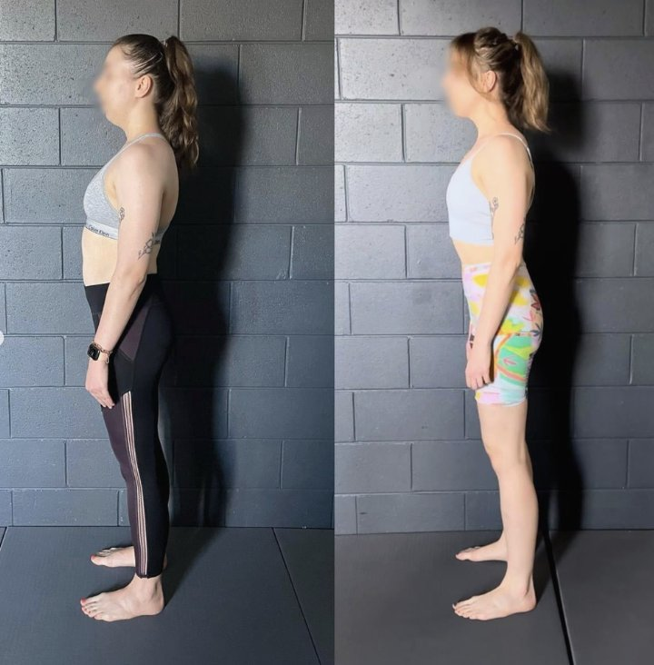

If you’re searching for dowager’s hump exercises, you’re probably hoping to flatten the hump at the base of your neck with the right stretches or strengthening routine.
That’s completely understandable — most advice online says the solution is exercises, posture drills, or “fixing weak muscles.”
The issue is this:
most people with a dowager’s hump already do exercises — and the hump doesn’t go away.
This isn’t because you picked the wrong exercise.
It’s because a dowager’s hump isn’t primarily an exercise problem.
What Is a Dowager’s Hump?

A dowager’s hump refers to the visible hump or thickened area at the base of the neck / upper back. You’ll often hear it described as:
-
A hump on the back of the neck
-
A humpback or humped back posture
-
A “hump in the back” that won’t flatten
In many cases, this isn’t a bone growth or disease — it’s a posture-driven structural pattern involving:
-
Upper spine (thoracic) rounding
-
Forward head position
-
Ribcage collapse
-
Chronic tissue thickening from repeated loading
That last part is important:
the body adapts to how it’s used most often.

The Common Advice: Dowager’s Hump Exercises
Most articles recommending exercises for dowager’s hump suggest some variation of:
-
Upper back strengthening exercises
-
Posture exercises to “pull the shoulders back”
-
Chin tucks
-
Chest stretches
-
Core stability exercises
These can temporarily make you feel straighter — especially right after doing them.
But temporary improvement isn’t the same as structural change.
Why Dowager’s Hump Exercises Usually Don’t Work Long-Term
Here’s the key problem:
Exercises don’t change posture unless they change how you move the rest of the day.
Most dowager’s hump exercises fail because:
1. They Are Isolated, Not Integrated
You might strengthen upper-back muscles — but posture isn’t controlled by one muscle group. It’s the result of full-body coordination.
2. They Don’t Address Walking or Daily Movement
Posture is reinforced thousands of times per day during walking, sitting, standing, and loading. If those patterns don’t change, the body reverts.
3. They Ignore the Nervous System
Your nervous system defaults to what feels efficient and familiar. A few minutes of exercises can’t override that without proper integration.
4. They Treat the Hump as a Local Problem
A hump at the neck is often the end result of mechanics coming from below — pelvis, ribcage, arm swing, breathing, and gait.
This is why many people:
-
Do exercises for months
-
See minimal visual change
-
Feel frustrated or blame themselves

Exercises for Humpback: When They Do Help
To be clear — exercises aren’t useless.
They can help when they are:
-
Selected based on an individual assessment
-
Integrated into movement patterns
-
Used as part of a larger biomechanical plan
Exercises alone don’t fix posture.
Exercises used to retrain movement can.
That distinction is everything.
When a Dowager’s Hump Is Not Just Posture
In some cases, a hump on the back of the neck may be related to:
-
Hormonal or metabolic factors
-
Medical conditions (e.g. true kyphosis, bone density changes)
That’s why guessing — or blindly doing exercises — is rarely the best first step.
If posture is the driver, it needs a movement-based solution.
If it isn’t, that needs to be identified early.
👉 This is exactly why we assess posture and gait before prescribing anything.
You can learn more about our approach here:
[Dowager’s Hump & Neck Hump Assessment]
What Actually Changes a Dowager’s Hump Pattern
Long-term change happens when you address:
-
How the spine moves during walking
-
How the ribcage and pelvis interact
-
How the arms, shoulders, and neck load during movement
-
How posture is reinforced unconsciously throughout the day
This is why posture correction isn’t about “trying harder” — it’s about changing the pattern the body defaults to.
For a deeper explanation of how posture patterns are treated biomechanically, see:
[Hunchback Posture Treatment: A Biomechanical Approach]

So Should You Do Dowager’s Hump Exercises?
Here’s the honest answer:
-
If you want temporary relief: exercises may help
-
If you want lasting change: exercises alone are unlikely to be enough
The more persistent the hump, the more important assessment becomes.
Not to sell you something — but to stop you wasting time on strategies that don’t match the problem.
The Bottom Line
Dowager’s hump exercises are popular because they’re simple.
But posture isn’t simple — it’s adaptive.
If you’ve been doing exercises and nothing is changing visually or structurally, that’s a signal — not a failure.
👉 The next step isn’t more exercises. It’s understanding what your body is actually doing.
You can start with:
-
Or a full posture & gait assessment if you’re ready to go deeper
Either way, clarity beats guesswork.